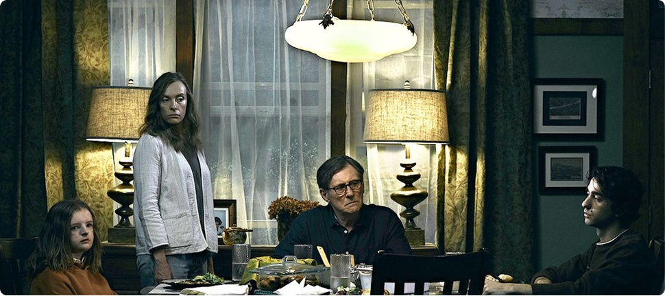
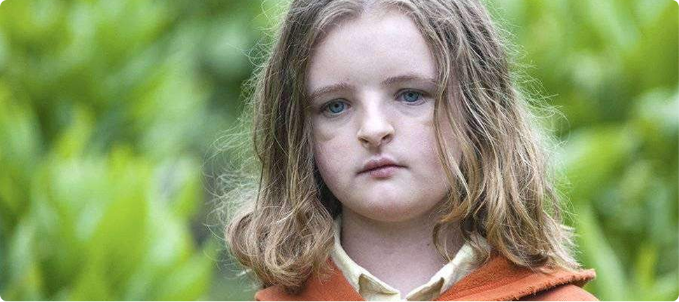
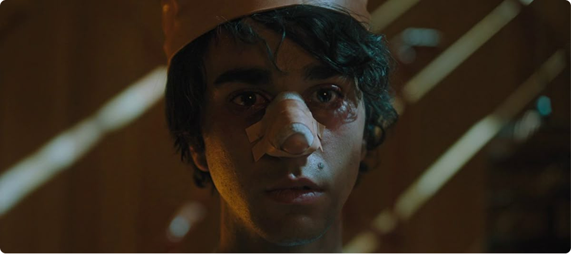
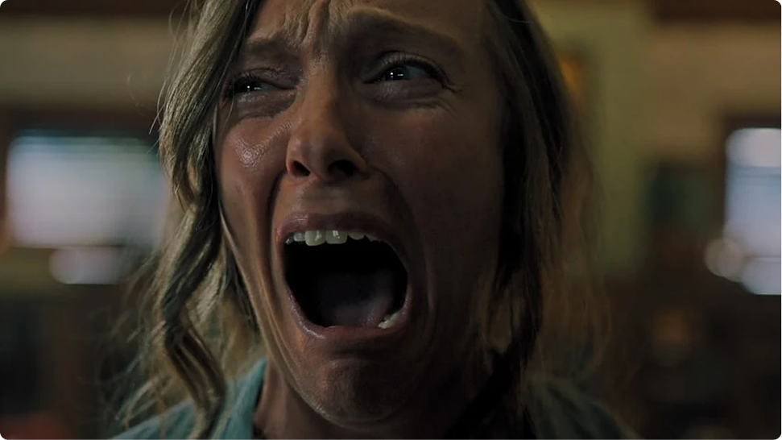
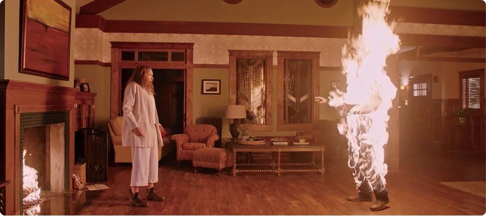

Фатализм как основа мироздания
С самого начала просмотра зритель оказывается
в неестественной атмосфере, где всё кажется слишком
правильным, выверенным и упорядоченным. Эта визуальная
составляющая, то, как показан мир, говорит гораздо больше
о том, как устроен мир «Реинкарнации»: в нём
изначально не предусмотрено места для проявления свободы
воли.
Фатализм, пронизывающий «Реинкарнацию», —
это не религиозная догма и не мистическое
предопределение. Это структурный фатализм, когда мир функционирует
как сложный, идеально настроенный механизм, где каждое событие уже
учтено, просчитано и неизбежно.
Каждое действие влечёт за собой предсказуемые последствия,
и ничего нельзя изменить.

Персонажи и их решения

На первый взгляд может показаться, что у главных героев
есть свобода выбора, возможность поступать по‑своему, определять
свою судьбу.
Например, Питер соглашается отвезти свою сестру на вечеринку,
хотя у него были другие планы. Энни отчаянно пытается
отгородиться от своей матери и её странного,
пугающего наследия, желая жить своей жизнью. Стив, муж Энни, изо
всех сил старается сохранять рациональность
и не поддаваться влиянию мистических сил, оставаясь
скептиком.

Но при ближайшем рассмотрении становится ясно, что каждое
из этих решений — это всего лишь единственно
возможный вариант действий, обусловленный их характерами,
травмами и сложившимися обстоятельствами. Питер не может
отказать сестре, потому что он привык подчиняться воле
других, быть послушным и безотказным. Энни не может
полностью разорвать связь с матерью, потому что вся
её личность, её самоощущение построено
на подавленной злости, чувстве вины и неразрешённых
конфликтах. Стив не может поверить во что‑то
потустороннее, потому что его роль в этой семейной
системе — быть голосом разума, отрицать всё
иррациональное и необъяснимое.
Таким образом, фильм показывает нам не свободу выбора,
а неизбежность определённой реакции на внешние
раздражители, предопределённость поведения в заданных
условиях.
Культ как режиссёр, а не злодей
Важно отметить, что культ, фигурирующий в фильме, практически
не проявляет активных действий. Его члены не преследуют
главных героев, не принуждают их к чему-либо
напрямую. Они просто присутствуют в тени, наблюдают
за происходящим и лишь слегка подталкивают события
в нужном направлении.
Это ключевой момент: культ
в «Реинкарнации» — это не злодей,
а скорее некая высшая сила, контролирующая происходящее.
Культ не создаёт ложные выборы для персонажей —
он заранее знает, каковы будут их решения, предвидит
каждый их шаг.
В итоге именно поэтому финал фильма воспринимается
не как кульминация напряжённой борьбы, а как формальное
завершение сложной, отлаженной процедуры, как концовка
предрешённой истории.
Иллюзия сопротивления
Особенно показателен образ Энни, матери Питера. Она кажется самым
активным персонажем в этой истории: она отчаянно ищет ответы
на мучающие её вопросы, злится, кричит, пытается что‑то
изменить, как‑то повлиять. Но, как ни парадоксально, все
её действия лишь ускоряют трагическую развязку.
В этом плане фильм проявляет особую жестокость
по отношению к зрителю: борьба за свободу
не просто бесполезна, она является неотъемлемой частью
системы, её необходимым условием.
В «Реинкарнации» у героев нет выбора,
их судьба предрешена.

Экзистенциальный ужас вместо хоррора
Действительно пугает в фильме не сам демон
и не откровенные сцены насилия, а мысль о том,
что человек — это всего лишь носитель определённой
роли. Тело, характер, психологические травмы, история
семьи — всё это не уникальный жизненный путь,
а набор жёстко заданных параметров, на основе которых
система прогнозирует поведение человека
и манипулирует им.
В этом смысле «Реинкарнация» перекликается
с фундаментальной экзистенциальной тревогой: если наши
решения предопределены прошлым опытом, страхами и чужими
ожиданиями, то где проходит граница между нашей истинной
сущностью и навязанными ролями?

Финал как честный вывод
Финал фильма часто называют неоправданно жестоким
и безнадёжным, но на самом деле
он последователен и логичен, является закономерным
итогом всего происходящего. Не происходит никакой победы
добра над злом, есть лишь исполнение предначертанного, завершение
неизбежного.
И именно в этом заключается честность фильма перед
зрителем: он не пытается обмануть нас,
не притворяется, что ужас можно победить, прогнать или
каким‑то образом избежать. Он утверждает, что иногда
ужас — это сама структура реальности,
её фундаментальное свойство, с которым невозможно
бороться.
Это фильм о том, как удобно верить в свою свободу, пока
сценарий твоей жизни уже давно написан кем‑то другим.